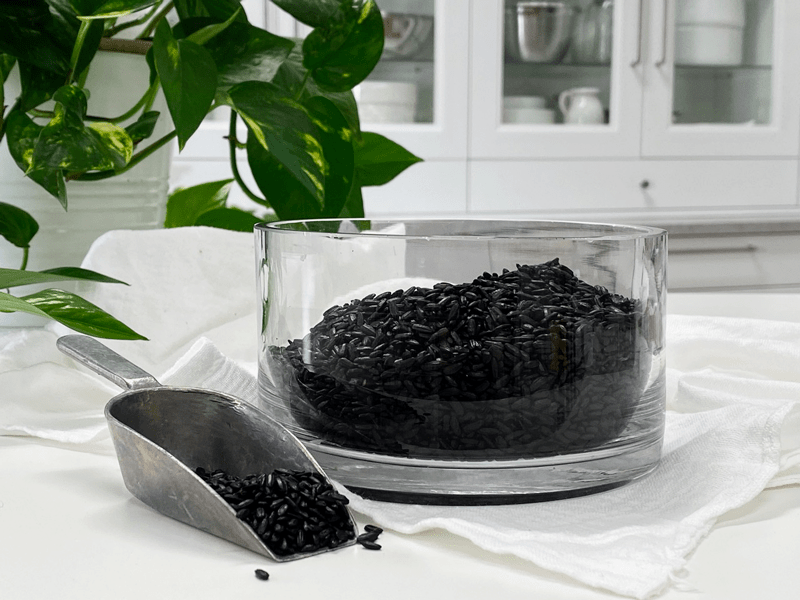
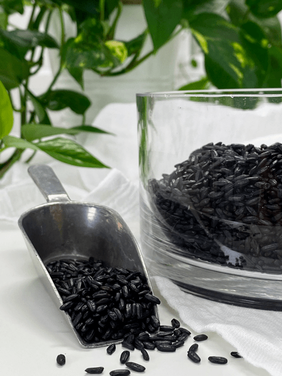

Forbidden Black Rice
Black rice offers all of the same health benefits of brown rice, but it also packs some serious antioxidants. Because of its dark color, black rice bran contains the same anthocyanin antioxidants found in blueberries or blackberries. The bran is the outer coating of the rice kernel.

White rice is stripped of this, which also removes away the nutrients. So always look for whole grain rice. Black rice is often referred to as “purple rice,” because when it’s soaked or cooked, it changes from black to a deep purple or burgundy color. When you sprout or cook the black rice, it brings a nutty, sweet flavor to the rice and softens the overall texture.
By soaking the forbidden rice, it will split open, make it soft, and make the essential nutrients available. If you have a compromised digestive system, I recommend cooking it, thus making it easier to digest. But only you can make that judgment call.
But just like any other grain, seed, or nut… it needs to be soaked before eating, which helps release the phytic acid that lurks within, which makes certain essential minerals such as zinc and iron calcium and magnesium un-absorbable.
Soaking it will also speed up the cooking time if you choose that route. In fact, it will cut the time in half, which can be helpful.
Grains can be acidic to the body, so to help with the acidity-alkaline balance, I added a small piece (1″) of kombu (sea vegetable) during the cooking process. Kombu contains the amino acid glutamine, a naturally sweet, superior flavor enhancer known as Umami. One the dried sea veggie is soaked, it expands in size and feels a bit slimy. It is very beneficial as it cuts down on gas and improves digestibility. After the rice is through cooking, you can remove the kombu, or you can dice it up and eat it along with your rice.

Ingredients:
Yields 3 cups
Preparation:
To sprout/soak:
- Place the rice in a fine mesh colander and rinse really thoroughly. Place in a medium to a large size glass bowl.
- Add water, vinegar to the rice. Stir together and cover with a towel. Leave on the countertop to “sprout” overnight or for at least 8 hours.
Enjoy raw:
- Drain the water, and enjoy it. OR
Enjoy cooked:
- Drain the soak water and rinse the rice before adding it to the pan.
- Bring the water (2 cups water for every cup of rice), rice, and kombu to a boil in a small heavy-bottomed saucepan.
- Decrease the temperature to maintain a simmer, cover, and cook until the rice is tender about 20 minutes. If the rice wasn’t soaked, it could take up to 60 minutes to prepare.
- Once done cooking, fluff the rice with a fork and enjoy.
- For a recipe, idea check out my Raw Blueberry and Forbidden Black Rice Porridge
© AmieSue.com